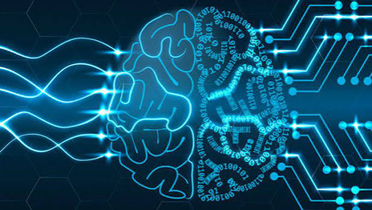
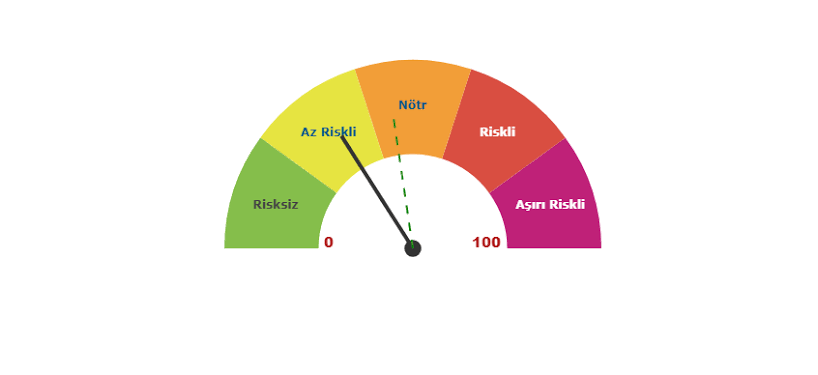

Ana Sayfa |
Nedir? |
Tarihçe |
Kullanım Alanları |
Çeşitleri |
Avantaj & Riskler |
Haberler |
Gelecek |
SSS |
Hakkımızda
Yapay Zekanın Avantaj ve Riskleri
Yapay zeka teknolojisi, sunduğu devasa fırsatların yanı sıra bazı önemli riskleri de beraberinde getirir.

Avantajları
- Yüksek Verimlilik: Rutin işleri hızlandırarak zamandan tasarruf sağlar.
- Gelişmiş Veri Analizi: Büyük verileri hızla işleyerek önemli trendleri ortaya çıkarır.
- 7/24 Kesintisiz Hizmet: Yorulmadan günün her saati çalışabilir.
- Hata Oranının Azalması: Dikkat hatalarını minimuma indirir.
Riskleri
- İş Gücü Kaybı: Otomasyon, bazı geleneksel meslek gruplarında risk oluşturur.
- Önyargı ve Ayrımcılık: Eğitim verilerindeki hatalar taraflı kararlara yol açabilir.
- Gizlilik ve Güvenlik: Hassas verilerin işlenmesi siber riskleri artırır.
- Dezenformasyon: Sahte içerikler (deepfake) bilgi kirliliğine neden olabilir.
